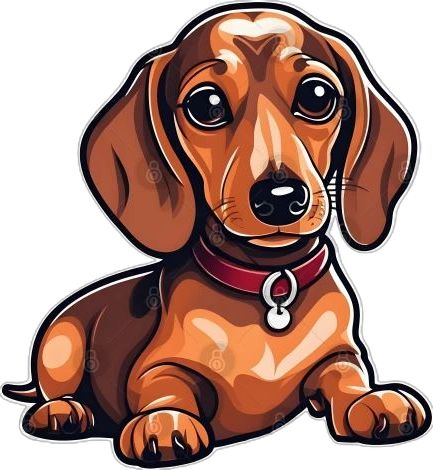

პიტბული
სხვადასხვა ისტორიულ ეპოქასა და მსოფლიოს სხვადასხვა ქვეყანაში ადამიანებს გამოჰყავდათ მებრძოლი ძაღლის ჯიშები. ამერიკული პიტ ბულ ტერიერი სტაფორდშირული ტერიერის და სხვა მებრძოლი ძაღლების შეჯვარების (მათ შორის, დღესდღეობით გადაშენებული მებრძოლი ბულდოგის) შედეგია. დღესდღეობით ამ სახეობის ძაღლების მხოლოდ სახელის ხსენება ისტერიას იწვევს. შვეიცარიაში იგი აკრძალულია. დიდ ბრიტანეთში მისთვის აუცილებელია ალიკაპის ტარება და მიკროჩიპის იმპლატაცია, და ბოლოს, მას უბრალოდ არ უშვებენ ჩრდილოეთ ამერიკის ზოგიერთ რეგიონში. ეს გამოწვეულია იმით, რომ პიტ ბული წარსულში მებრძოლი ჯიში იყო, დღეს კი ზოგიერთი პატრონი მიმართავს გაწვრთნის უხეშ ფორმებს, რის შედეგად ძაღლი ნებისმიერ მომენტში მზად არის ეცეს სხვა ცხოველს და ადამიანსაც კი. პიტ ბულ ტერიერის უმრავლესობა (თუ პატარაობიდან მიაჩვევთ პატრონის ბრძანების შესრულებას) ალერსიანი და გულღია შინაური ცხოველია.

ტაქსა
ტაქსა — სანადირო ძაღლების ჯიში. იყენებენ მელიის, აცვის, ენოტისებრი ძაღლის სოროში მოსაპოვებლად.თავისი ფორმის წყალობით ჯიშს შესწევს უნარი ნებისმიერ სოროში შეძვრეს და გამორეკოს ცხოველი. აქვს გრძელი ტანი, მოკლე ფეხები (გაფარჩხული წინა კიდურები). სოლისებრი თავი, დაკიდებული ყურები და ხმლის ფორმის კუდი. ტაქსა ეგვიპტეში ცნობილი იყო ჯერ კიდევ ძვ. წ. 2 ათ. წლის წინათ. მეცნიერები თვლიან რომ ტაქსას წინაპრები იყვნენ ძველი ეგვიპტური ძაღლები გრძელი ტანით და მოკლე კიდურებით. როგორც ჯიში ჩამოყალიბდა XVIII საუკუნის შუა წლებში გერმანიაში. განასხვავებენ მსხვილ, საშუალო და ჯუჯა (ქონდარა) ტიპის ტაქსას.
